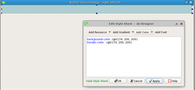
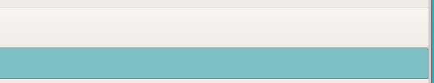
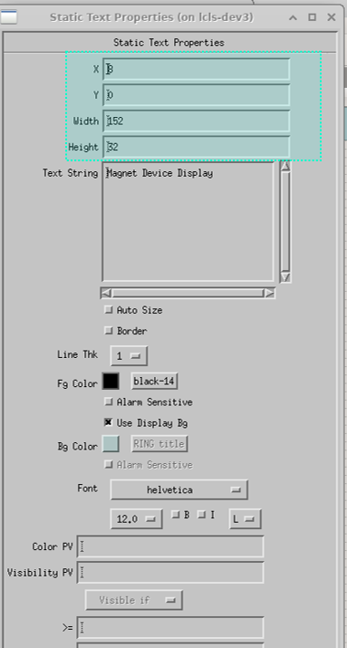
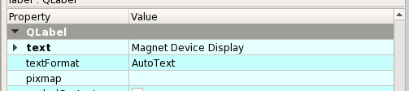
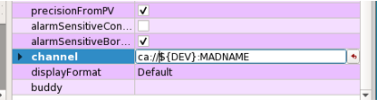
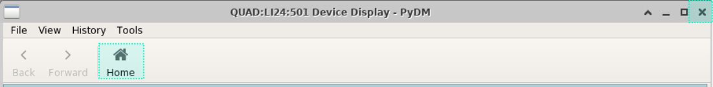
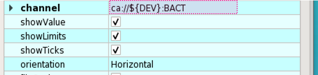

Convert an Existing EDM Screen to a PyDM Screen¶
In this section we will go over an existing EDM screen and try to convert it to a PyDM screen.
Note
There are multiple ways one can go about designing a screen in PyDM, therefore in this Walk-through we will merely cover a particular approach but please be aware that there could be other approaches that are better or simply more convenient for you.
Let’s start with the screen that we want to convert:

The first steps that we want to take when converting an EDM screen, is to go in Edit mode on the EDM screen and inspect what types of widgets we have so that we know what widgets we should be using in PyDM.
To do this, middle click on the EDM screen and select Edit – see highlighted in blue in the image below:
Now you can inspect individual widgets’ properties by left clicking on the widget you want to inspect.
Window Title and Properties¶
EDM - Title¶
Middle click on the background of the window and select Display Properties:

In the Title of the window’s properties, you can see that we use a macro $(DEV), we want to do the same in PyDM.
PyDM - set Title¶
When selecting the window (in the work area) you will get on the right side of the Qt Designer, the properties of the window.
Scrolling down in the properties area you will see one called windowTitle – change the default name (Form) to a custom name.
Important
In PyDM we define macros with curly brackets instead of parenthesis, e.g.: ${DEV}
EDM - window dimensions¶

PyDM - set window dimensions¶
From the Properties area, go to the Width and Height properties and change them accordingly:
Now let’s save the File in PyDM!
Type Ctrl+s and give the window a proper name, in this case we’ll name it the same way as the edm screen:

For a quick check, you can try to open the .ui file now with PyDM:
pydm -m “DEV=PV:NAME:HERE” mgnt_unit2.ui
Note
When we open an .ui file with PyDM we pass in macros using -m followed by the macros’ definition.
EDM - toggle title¶
Change the window title to display the path to the file - middle click on the window and select Toggle Title:
PyDM - toggle title - View File Path¶
Change the window title to display the file location – when the window is open go to View -> Show File Path in Title Bar:

Banner¶
EDM¶
Most EDM screens will have a banner. Inspect the widget used for this banner by selecting the banner, and left clicking on it, you will get the properties of a Rectangle widget:

PyDM - banner¶
There are multiple ways for replicating an EDM banner in PyDM, in this example we will be using a QtFrame.
Form the left side where the widgets are, drag and drop a Frame on your window:

Change the dimensions to match the EDM banner dimensions and X, Y location from the properties area on the right:

Let’s add a color: right click on the QFrame Widget, and choose Change styleSheet..:
From the Add Color, choose the down arrow button:

Choose the background-color and the border-color one at the time to change the colors, you should see a window that displays the colors after selecting an option:

Choose a color for each drop-down option you selected, and save it:
Important
We will get more into Stylesheets as we go through this walk-through, generally you want to have a .qss file where you define the stylesheet for all the widgets and point PyDM to that file. For now, please know that the stylesheet changes made in QtDesigner will take precedence over what is defined in the .qss file.
Ideally, besides the default stylesheet that comes with PyDM, we could have a .qss file per facility, where we can customize the stylesheet to be specific for that facility.
One example of where this comes into play is the banner widget.
Let’s say we want all the banners to have a certain color in one facility. In this case, instead of manually changing the colors for every screen banner from Qt Designer, we could define the banner color in a .qss file and point PyDM to it:
First we would have to give a good name to our banner object so we can later access this name when we create the sylesheet, from the properties change the
objectNameto something specific:
Next we want to create a simple
.qssfile:

Note
Please note in the stylesheet we only change the style for the QFrame which name is banner_top, so this won’t apply for any other frames that we have on our screen.
Now to make sure this works, let’s go back to the banner’s styleSheet, right click on the banner frame and choose
Change styleSheet..., then select everything in there and hitDeleteon your keyboard:

Save that, and now let’s try to open the screen with our
.qssfile from your bash shell:PYDM_STYLESHEET_INCLUDE_DEFAULT=1 pydm -m "DEV=MY_PV_HERE" --stylesheet my_style.qss mgnt_unit2.ui
We would get something similar to this:
Note
We used the PYDM_STYLESHEET_INCLUDE_DEFAULT=1 variable to include both, our customized stylesheet (my_style.qss) and the default one that comes with PyDM.
Static Text¶
EDM¶
Static Text Example in EDM, looking at the Magnet Device Display text:

Some of its properties:
PyDM¶
For Static Text in PyDM use a QLabel.
Drag and drop a QtLabel:

Double click on the label to edit the text, or change it from the properties on the right:
From properties on the left also change the dimensions as well as the position:

Scroll down in the properties area and change the font if you need/want to by clicking on the button next to font as highlighted in blue below.
Note
You might not find all the Fonts that we have in EDM, for simplicity, using the default one is best. Be aware that some fonts might be larger or smaller, and some adjustment of widgets’ dimensions might be needed because of that.
We’ll get a window where we can change more font-specific properties:

By default, a QLabel will not have a background color so in this case we don’t need to worry about setting the background color to match the banner color (not yet at least), but if we need to add a color to the label widget we would follow the same steps as we did for the QFrame:
Right click on the label, go to Change styleSheet and choose a background color for example:


Text Control – Non-Editable¶

PyDM¶
Use a PyDMLabel for a non-editable Control Text in PyDM. Drag and drop a PyDMLabel.
Go through the same process as for a Static Text with changing the dimensions, position, and font (if needed).
Expend the font to make it bold from the font down arrow properties:

Note the extra properties of a PyDMLabel if you scroll all the way down in the properties area (compared to the QLabel).
Most of the times you will leave default properties for these labels. Note the channel property – here is where you would insert a PV.

Let’s add a PV:
Important
PVs start with ca:// in PyDM.
Note
If we don’t have Qt Designer set to be “Online” we will not see the PVs’ values in QtDesigner. To set the Qt Designer online we need to export this variable to 1:
export PYDM_DESIGNER_ONLINE=1
The banner is done, please note that by default every screen in PyDM will come with similar buttons as in EDM, so there are no widgets for these:


In PyDM all screens will have this set of menus:
Click on File to get more options and find out more about PyDM:

Please explore the other menu information and options.
Grouping Things Together¶
PyDM¶
In PyDM there are multiple ways to go about grouping things together esthetically.
You could use a QLabel and a Frame to imitate what we have in EDM, but for simplicity we’ll use a different widget called QGroupBox – this one already has a text in it and a shaded frame area by default:

Double click on the GroupBox text to change the text and change the dimensions from the properties on the right.
Warning
Note that when using the QGroupBox (or a Frame), the X and Y will reset to 0, 0 from the QGroupBox, so you’ll have to account for that when adding widgets in the box, if you don’t want to account for that and want to match the X and Y positions as close as possible to EDM’s widgets, add the GroupBox at the end after you are done adding the widgets.
For example if we wore to skip ahead and add a QGroupBox at the end, simply drag and drop a GroupBox on top of what you want to group (this is just an example):

You can also right click on it and send it to back so you can access the widgets in it freely:

You can do a similar thing with a
Frame, just drag and drop aFrameand stretch it so it covers the group area:
Meter Widget¶
EDM¶

PyDM:¶
In PyDM we do not have a Meter Widget - we have a similar widget we can use, but the design is a bit different, in the sense that it is not circular, here we can use a PyDMScaleIndicator widget:

Change the dimensions and properties as we previously did with other widgets, add PV:
Take off the precisionFromPV option and add a precision value of 2:
Change the color of the indicator if desired:

You can also get a feel of how it would look in Preview Mode, go to Form and select Preview:
Now if you like how it looks, you can copy and paste it to get the second one.
Select the widget, Ctrl+c to copy it, and Ctrl+v to paste it. You will have to adjust the position for the second one and change the PV.
Note that this widget does not have a label, so let’s add a simple QLabel. Place a label right below the widget and make sure it has the same width, as well as it starts at the same X as the scale widget, and at Y + height of scaleIndicator for Y position:

Additionally, you can give both these widgets a background color if wanted - to look like they are part of one widget (simulating EDM), just right click on the widget and select Change stylesheet to add a background-color and a border-color for both. Here is how they would approximately look:

Note
You can choose a color by picking directly one around your work area by selecting the Pick Screen Color. This is useful when you don’t remember what color you used previously but want them to match with a color you already chose previously - see below:

Text Control – Editable- Motif Widget¶
EDM¶
Proceeding with the next section on our screen, we have a widget Text Control that is in Editable mode highlighted in blue below:

PyDM¶
In PyDM, we use a PyDMLineEdit for a Text Control that is Editable (you can write in it):

It will have similar and additional properties as a PyDMLabel.
Note how I added the the other labels, we already covered those labels in this walk-through above. If you need to change one thing for multiple widgets of the same type, you can select all of them (mouse drag or Ctrl+left click) and change it for all at once, for example I took out the
alarmSensitiveBorderproperty Off from the EGU labels:
Select all those labels (Ctrl+right click on the widget):

Uncheck the alarmSensitiveBorder box, unchecking only once will uncheck for all those selected widgets:

One thing that I also had to go back and do was to change the Display Format for some label widgets, you can do it by selecting multiple widgets again and change the property of the dispalyFormat to what the EDMs are - in this case I changed them from Default to String:

Related Display¶
EDM¶
Continuing with the next section in the screen we have a new widget that we have not covered here yet - the Related Display.

PyDM¶
In PyDM we have a Related Display widget called PyDMRelatedDisplayButoon – this is a button to open another PyDM Display.
In addition to this we also have the PyDMEDMDisplayButton – this is a button to open an EDM screen.
In this case, we want to open existing .edl screens so we will choose the second option:
From the related button properties, we can add the name to be displayed on the button under the text area:

We can add the filename we want to open, under the filenames click on Change String List:
Click on New to add a file and type the file name in the Value section:

Important
Note you have to write the path to this file relative to your current screen.
We can also define the related display file’s macros:
Check the openInNewWindow option to open the file in a new window:

Again, as previously mentioned, when we have multiple widgets of the same type and you want to check a box or write the same macros for example, just select all of them and do it all at the same time by writing it only in one spot.
Slider¶
EDM¶
In the next section we meet a new widget that we have not discussed previously, the Motif Slider:

PyDM¶
In PyDM we have a similar widget called PyDMSlider – drag and drop one in the new QControlBox (note we created a new QControlBox rather than doing that at the end as explained previously):

Let’s adjust some properties, let’s change precision to 4 and take out the precisionFromPV, aslo let’s add a channel PV:

Let’s also add a label on top of this widget to imitate what we have in EDM:
Message Button - Push Button¶
PyDM¶
In PyDM we would use a PyDMPushButton for this type of widget:

In our case we might want to change a few main properties like: text, channel, pressValue, releaseValue, and maybe others.

For the Visibility PV we would handle it this way in PyDM - Right click on the widget and select Edit Rule:

You will get a new little window where you will need to:
click on Add Rule
give it a Rule name
add the channel PV
define the condition
If you look at the EDM condition, it says Not Visible if the PV value >= 1 and < 2.
We will have to modify the condition to be true for Visible if instead:

Save it when you are ready.
Note
For the 3 buttons I applied the same rule, so I was able to select all three buttons and just type the rule ones – this was applied for all 3.
Menu Button¶


Horizontal Bar¶
PyDM¶
In PyDM we can use the PyDMScaleIndicator for this type of widget:
Note, we should check the barIndicator for it to look like a progress bar, Also, we can change the indicatorColor to be green, and take the showTicks off:
By default this scale indicator will be horizontal, but we can change the orientation to Vertical if we need to.
We can also take the showLimits off to be more consistent with the EDM widget, as well as showValue off, and let’s also check the originAtZero box:

Note
In Qt Designer it will not show the green progress indicator unless we are reading that PV and it has a value in it.
Let’s also add a label:

Choice Button¶


PyDM¶
In PyDM we would use a PyDMEnumButton for this widget:
Properties - please note that besides changing the width and height, we should take off the alarmSensitiveBorder, insert the channel, change the orientation to Horizontal, and set the margins settings all to 2 so there is little space between the buttons – imitating the EDM widget:
Rectangles - Frames¶

PyDM¶
In PyDM we can accomplish the same thing with a QFrame:
Adjust the width and height and copy and paste the frame to reuse it.
You can also change the style of these frames by choosing a different frameShape:

Here we chose a Box and also set the frameShodow to Plain and lineWidgth to 2:

This is approximately how it will look:

We can also take a different approach here, and instead of creating three boxes, we could create one and add some horizontal lines, and from the properties give them different thickness to be more pronounced if needed.

Radio Button¶
EDM¶
Radio Button in EDM:
Note if more widgets are in a Group Box, you’ll have to middle click and select Ungroup for all the groups until you get to the Radio Box:

Properties of the Radio Box:

PyDM¶
In PyDM we will use a PyDMEnumButton for this widget as well:
Set the widgetType to RadioButton:

Also change the margins from 9 to probably a smaller value, except you want to have some distance vertically between them, so leave the verticalSpacing to 9.

Besides inserting the channels, some of these radio buttons have a rule - to be invisible when a condition is met, so let’s select all the widgets that will have this rule (the rule is the same for all in this case) and add it in:
Select all radio button widgets that will have the rule. You can select them with holding down Ctrl and clicking on the widget with the mouse:
Add the rule by right clicking and choosing Edit Rule:

Embeded Display¶
EDM¶
The last portion on this screen that we have not covered yet is the Embedded Display, looking at the properties, we see that this embedded display is opening a file highlighted below:

Notice that we’re using a macro here $(DISP) - if you are unsure of what this macro represents and you have to specify that in a PyDM embedded display, you can see the macros by right-clicking on the widget, and choose Show Macros
Also, if we need to investigate the Related Display Buttons a little further, we could open the actual edm screen from the terminal and look at the properties of those buttons:
edm mgnt_unit_epcs.edl
This will open the following window in Edit mode, so we can click on each widget to see their properties:

PyDM¶
In PyDM we’ll have to create that file first. Go to File -> New and create a new Widget, set the width and height to correspond to the ones seen in the EDM Embedded Display properties.
Notice that in the EDM Embedded Display we have 4 Related Display Buttons, let’s recreate them in PyDM. We’ll be using a widget we already covered previously - the PyDMEDMDisplayButton to open existing edm displays, thus we will not go into too many details here.
Open the displays by clicking on the EDM buttons (from the EDM screen) to see what files we need to open with the Related Display widgets by looking at the Toggle Path option as previously explained, so we can add those file names and their paths to our PyDMEDMDisplayButton widgets.
Add their file names:
Preview:
Note
Make sure you check the openInNewWindow option for each button!
Now that we have this file created, let’s go back to our main screen and add a PyDmEmbeddedDisplay widget:
Let’s add the file name that we just created, and because they are in the same folder, no additional paths need to be included in the filename properties, only the file name itself.
You’ll notice that as soon as you add the filename the display we created previously will appear on the main screen:
Note
If the display is not showing up, make sure the path of the file relative to the current screen is correct!
This concludes all the widgets on this screen - go to the next section for some touch up and stylesheets!! And this is approximately how it looks now:

{kind=link}
{kind=link}
{kind=link}
{kind=link}
{kind=link}
{kind=link}
{kind=link}
{kind=link}
{kind=link}
{kind=link}
{kind=link}
{kind=link}
{kind=link}
{kind=link}
{kind=link}
{kind=link}
{kind=link}
{kind=link}
{kind=link}
{kind=link}
{kind=link}
{kind=link}
{kind=link}
{kind=link}
{kind=link}
{kind=link}
{kind=link}
{kind=link}
{kind=link}
{kind=link}
{kind=link}
{kind=link}
{kind=link}
{kind=link}
{kind=link}
{kind=link}
{kind=link}
{kind=link}
Note
Some of the widgets are disabled because we only have Write-Only access.